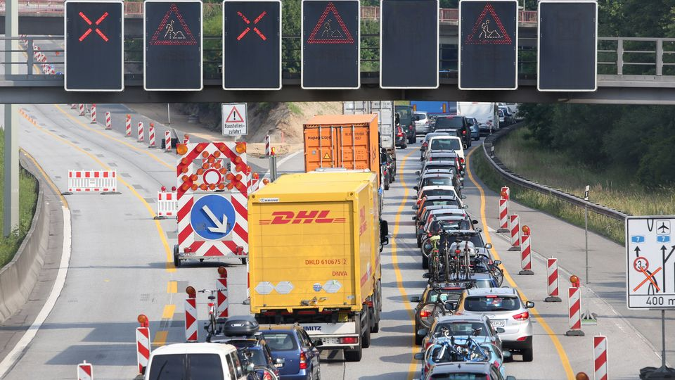
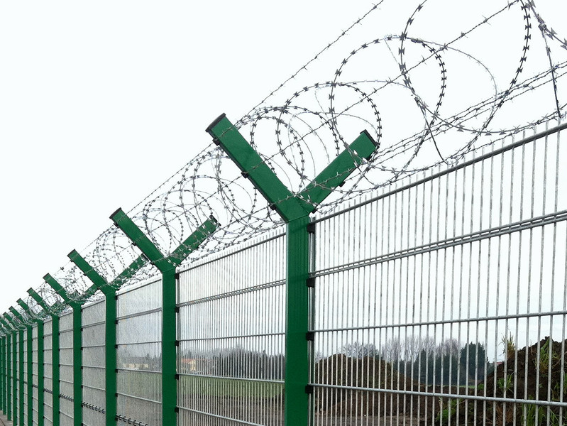

Nähert man sich einer Gefahrenstelle, ist eine Absperrung meist der erste visuelle Hinweis, welchen man wahrnimmt. Sie signalisieren Gefahren, ob temporär oder längerfristig. Straßensperrungen begegnen uns in vielen alltäglichen Situationen, indes auch zu besonderen Anlässen. Doch wie unterscheiden sich die einzelnen Arten voneinander und welche Besonderheiten weisen Sperrungen in Krisengebieten und bei Naturkatastrophen auf?
Baustellensicherung
Eine der gängigsten Absperrungen sind wohl bei Baustellen zu finden. Diese begegnen uns täglich im Stadtraum und dienen der Absicherung der Baustelle von inneren und äußeren Gefahren. In dieser Analyse beschränken wir uns auf die äußere Baustellensicherung. Hierzu gibt die Bundesanstalt für Arbeitsschutz und Arbeitsmedizin genaue Vorgaben. Um Personen vor den Gefahren einer Baustelle zu schützen, ist eine Errichtung eines Bauzauns erforderlich. Dieser stellt eine räumliche und optische Abgrenzung des Gebietes dar und hält Unbefugte vom betreten der Gefahrenbereiche ab. Bauzäune können blickdicht durch Holz oder lichtdurchlässig durch Drahtgitter errichtet werden.
Um die Trennung der Baustelle optisch für Verkehrsteilnehmende hervorzuheben, ist die Sicherung durch zusätzliche Mittel erforderlich. Es sind Maßnahmen an Straßen-, Rad- und Gehwegen vorzunehmen. Die Sicherung kann durch zusätzliche Verkehrsschilder, Markierungen, Lichtsignalanlagen, Baken oder Leitplanken erlangt werden. Diese sichern die Baustelle über ihren gesamten Zeitraum hinweg. 1


Sicherung von Unfällen
Liegen Einsatzgebiete im aktiven Verkehrsraum, sprich auf öffentlichen Straßen mit aktivem Fahrzeugverkehr, so müssen Warn- und Absperrmaßnahmen zum Schutz der Einsatzkräfte unverzüglich vorgenommen werden. Alle nötigen Maßnahmen der Absicherung von Unfallstellen sind im „Sicherheit im Feuerwehrdienst“ GUV I 8651 der deutschen gesetzlichen Unfallversicherung zusammengefast. Eine Sicherung der Unfallstelle ist prinzipiell Aufgabe der Polizei. Sollte diese allerdings erst nach der Feuerwehr eintreffen oder nicht entsprechend ausgestattet sein, ist es Aufgabe der Feuerwehr, die Unfallstelle gemäß ihres Ausmaßes abzusperren. 4
Bei der Sicherung eines Unfalls muss die Höchstgeschwindigkeit der Straße berücksichtigt werden und die Sicherung dementsprechend angepasst werden. Hat die Straße eine direkte Gegenfahrbahn, muss eine Absicherung gleichermaßen auf beiden Richtungen erfolgen. Zum Absichern einer Unfall- oder Gefahrenstelle werden unter anderem Warndreiecke, Warnleuchten, Verkehrsleitkegel (Zeichen 610 StVO, mindestens 500 Millimeter hoch, auf Autobahnen 750 Millimeter, vollreflektierend), Warnflaggen, Warnschilder, Beleuchtungsgeräte und in ausgewählten Fällen Fahrzeuge mit Warntafeln vorgesehen. Zusätzlich haben Einsatzfahrzeuge ihr Rundum-Kernlicht, ihre Warnblinkanlage und ihr Fahrlicht anzustellen. Einsatzkräfte haben im gesamten Einsatz reflektierende Warnkleidung zu tragen. 5
 6
Militärische Sicherheitsbereiche Ein militärischer Sicherheitsbereich, kurz MSB, ist ein militärischer Bereich im Bundesgebiet und kann beispielsweise eine Kaserne oder ein Truppenübungsplatz sein. Militärische Sicherheitsbereiche unterscheiden sich zu normalen militärischen Bereichen in dem Sinne, da dort besonders schutzbedürftige Gebäude mit gelagerten Waffen oder sensibler Infrastruktur zu finden sind. Militärische Sicherheitsbereiche unterliegen besonderen Regeln für Besucher:innen sowie Soldat:innen. Diese Bereiche können nur durch jeweilige Zugangsberechtigungen und mit Begleitung betreten werden. Außerdem haben Sicherheitskräfte dort erweiterte Befugnisse und sind in Extremfällen zum Schusswaffeneinsatz befugt. 7
Militärische Sicherheitsbereiche sind immer mit entsprechenden Warntafeln ausgestattet. Alle militärischen Bereiche und Standorte der Bundeswehr werden besonders geschützt und bewacht. Zusätzlich zu Zäunen mit oder ohne Übersteigschutz wird vielerorts Wachpersonal und moderne Sicherheitstechnik mit Kameras, Sensoren oder Wärmebildtechnik eingesetzt. Laut dem Dienstleister „Sicherheit Nord“, der unter anderem für die Sicherheit von Bundeswehrliegenschaften verantwortlich ist, durchläuft das Wachpersonal Schusswaffentrainings und arbeitet mit Diensthunden zur gründlichen und effizienten Gewährleistung des Wachschutzes. 8
 9
Absperrung in Krisengebieten
Die Maßnahmen zur Sperrung von Straßen unterscheidet sich nur marginal von der bei Naturkatastrophen wie etwa einem Hochwasser. Wird eine Straße für Autofahrer:innen oder Fußgänger: innen auf Grund einer Überschwemmung der Fahrbahn gesperrt, werden Baken, Lichtsignale und „Durchfahrt Verboten“- Schilder genutzt. Zusätzlich werden Schildkörper mit der Aufschrift „Hochwasser“ angebracht. Eine temporäre Absperrung mit Absperrband wird teilweise auch praktiziert. Visuell sind die Sperrungen kaum von regulären Baustellen oder Straßensperrungen zu erkennen. Einige Städte verfügen an Promenaden oder Gehwegen am Flussufer über stationäre Tore oder Absperrungen, die im Gefahrenfall einer Überschwemmung ausgefahren oder ausgeklappt werden können. Auch eine Warnung über lebensgefährliche Überquerungen der unter Wasser stehenden Straßen gibt es vielerorts nicht. Immer wieder kommt es zu Meldungen, in denen Autofahrer:innen mit ihren Autos in vollgelaufenen Unterführungen oder Straßen feststecken. Durch Nichtbeachtung der Absperrungen oder Fehlinterpretation der Lage sind die betroffenen Personen dann auf Hilfe von außen angewiesen. Durch den immensen Druck des Wassers von außen, lassen sich die Türen der Fahrzeuge oftmals nicht mehr öffnen und die Feuerwehr oder das THW muss alarmiert werden. Durch eine leichtsinnige Aktion wird somit das eigene, aber auch das Leben der Rettungskräfte aufs Spiel gesetzt. Vielen sind die Gefahren von Wasser und Strömung nicht bewusst, wie ein kleiner Ausschnitt aus unzähligen Beispielen zeigt.
2013 fährt eine Fahrradfahrerin an der wegen Hochwasser gesperrten Absperrung einer Landstraße vorbei, verliert wenig später das Gleichgewicht und wird von den Wassermassen mitgerissen und stirbt, wie mehrere Augenzeugen berichten. Rettungskräfte sind entsetzt und appellieren an die Menschen die Sicherheitsmaßnahmen erst zu nehmen. „Das ist die Überschätzung der eigenen Möglichkeiten oder der Fähigkeiten des Autos“. So Richard van Hazebrouck vom THW Bonn. 10
Auch bei den Überschwemmungen im Juni 2024 in Bayern ist ein Todesopfer durch fahrlässige Nichtachtung der Absperrung zu beklagen. Eine Frau ignorierte eine Absperrung im überfluteten Markt Rettenbach und fuhr mit dem Auto in die Strömung. Das Auto lief voll Wasser und Rettungskräfte konnten sie nur noch tot bergen. 11
Im selben Zeitraum kommt es mehrfach zu gefährlichen Situationen in München. Mehrere Menschen nutzten das Hochwasser der Isa um dort in den Strömungen zu surfen. Polizei und Feuerwehr warnen ausdrücklich vor Nichtachtung der Absperrungen und nannten das Verhalten der Personen unverantwortlich. So würden nicht nur sich sondern auch Passanten und Rettungskräfte in Lebensgefahr bringen. Es sei ein „verrücktes Risiko“, das nicht kalkulierbar ist. Nicht nur die starke Strömung und der hohe Wasserstand, sondern auch ankommendes Treibgut machen die Aktion lebensmüde, so die Einsatzkräfte. 12
Dies war nur ein kleiner Einblick in die Gefahren der Missachtung von Absperrungen. Nichtsdestotrotz werden Straßensperrungen häufig missachtet und die Gefahren unterschätzt.

Absperr-Warnband
An Orten wie Baustellen, Veranstaltungen, öffentlichen Plätzen oder anderen Gefahrenstellen, die von Personen nicht betreten werden sollen, da eine bestimmte Gefahr gesteht, ist eine Abgrenzung und Absperrung nötig. Eine gerade bei spontanen Schadenereignissen visuell überzeugende Möglichkeit, bietet Absperrband, oder auch Flatterband genannt. Es kann leicht an vorhandene Strukturen angebracht werden und grenzt bestimmte Bereiche ab oder ermöglicht die Führung von Personen durch einen bestimmten Bereich. Dabei unterscheidet man zwischen mehreren Varianten des Bandes. [^14]
weiß/rot
Das abwechselnd weiß und rot bedruckte Kunststoffband ist das Standardband in Deutschland. Es eignet sich für Absperrungen bei Tageslicht und ist durch seine auffallende Farbe gut von Weitem sichtbar. Das Band besticht durch seine Reißfestigkeit, Wasser- und Witterungsbeständigkeit. Es kommt in vielen Bereichen wie etwa der Absperrung von Gefahrenstellen, Zutrittsbeschränkungen, Kennzeichnungen oder Leitung für Besucher:innen zum Einsatz. Es wird von Polizei und Rettungskräften benutzt, kann aber auch von Firmen und Privatpersonen zur Gefahrenkennzeichnung eingesetzt werden.
gelb/schwarz
Das gelb-schwarz gestreifte Absperrband hat die gleichen Eigenschaften wie das Standardmodell. So wird der Einsatz allerdings laut der Arbeitsstättenrichtlinie A1.3 für ständige Hindernisse und Gefahrenstellen eingesetzt. Dabei besteht die Aufgabe im Anzeigen von Gefahren an Maschinen, spitzen Kanten, Unebenheiten oder Stufen auf dem Boden, die eine anhaltende Gefahr darstellen. Haupteinsatzbereiche sind somit hauptsächlich Werkstätten, Lager oder Produktionsbereiche.
weiß/grün
Das weiß-grüne Absperrband hat keinen Eintrag in den Arbeitsstättenrichtlinien. Es konnte sich dennoch bewähren und kann durch seine auffällige Farbe vor Gefahrenstellen warnen und eine gute Aufmerksamkeit auf sich ziehen, da es in der Regel nicht häufig Verwendung findet und somit einen neuen Impuls für das Auge bietet.
weiß/blau
Neben dem standardmäßigen Absperrband setzt die Polizei, seit der Einführung der blauen Außendarstellung und Dienstkleidung, auch auf weiß-blau gestreiftes Absperrband. Auch das Technische Hilfswerk nutzt bei Einsätzen ein zur Außendarstellung passendes blau gestreiftes Absperrband.
Je nach Einsatzgebiet und Akteur können auch Hinweise auf das Band gedruckt werden. So gibt es beispielsweise Versionen für Polizei, Feuerwehr, THW, aber auch spezifischere Hinweise wie „Gefahr“ oder „Sperrzone“. Sie alle dienen der Gefahrenvisualisierung. Für den Katastrophenschutz gibt es allerdings keine einheitlichen Absperrrichtlinien oder gar eine eigene Signalfarbe.
-
Vgl. baua: Baustellensicherung, 2021, https://www.baua.de/DE/Themen/Arbeitsgestaltung/Arbeitsstaetten/Bauwirtschaft/Baustelleneinrichtung ↩︎
-
Abb.: Straßensperrung https://www.iagmainz.de/baustelle-absperren-sichern/ ↩︎
-
Abb.: Bauzaun https://www.rheinpfalz.de/lokal/kreis-bad-duerkheim_artikel,-anwohner-bemängeln-absicherung-der-schiltchen-baustelle-_arid,5092067.html ↩︎
-
Vgl. Feuerwehrmagazin: Einsatzstellenabsicherung – Gefahrenquelle Verkehr, 2022, https://www.feuerwehrmagazin.de/wissen/einsatzstellenabsicherung-gefahrenquelleverkehr ↩︎
-
Vgl. Deutsche Gesetzliche Unfallversicherung: Information – Sicherheit im Feuerwehrdienst, 2011, https://www.unfallkasse-nrw.de/fileadmin/a-und-a/I_8651.pdf ↩︎
-
Abb.: Sperrung Autobahn https://www.spiegel.de/reise/aktuell/sperrungen-auf-derautobahn-a7-norddeutschland-droht-stauchaos-a-1152632.html ↩︎
-
Vgl. Bundeswehr: Militärischer Sicherheitsbereich – was ist das eigentlich?, 2022, https://www.bundeswehr.de/de/aktuelles/meldungen/militaerische-sicherheitsbereichewas-ist-das-eigentlich-5529052 ↩︎
-
Vgl. Sicherheit Nord: Bundeswehrliegenschaften – Wachschutz für die Landessicherheit, 2024, https://www.sicherheit-nord.de/leistungen/personelle-sicherheit/bundeswehrliegenschaften/ ↩︎
-
Abb.: Zaun mit Übersteigschutz https://www.berlemann.de/produkte/zaunsysteme/sicherheitszaun/ ↩︎
-
Vgl. Zeit Online: Gefährlicher Leichtsinn – Menschen unterschätzen Hochwasser, 2013, https://www.zeit.de/news/2013-06/01/wetter-gefaehrlicher-leichtsinn-menschen-unterschaetzen-hochwasser-01131002 ↩︎
-
Vgl. Merkur: Fünfte Flut-Tote – Frau fährt durch Absperrung und stirbt im vollgelaufen Auto, 2024, https://www.merkur.de/bayern/fuenfte-flut-tote-frau-faehrt-durchabsperrung-und-stirbt-im-vollgelaufen-auto-bayernhochwasser-93109248.htm ↩︎
-
Vgl. BR: Surfen bei Hochwasser? – Absolut unverantwortlich, 2024, https://www.br.de/nachrichten/bayern/surfenbei-hochwasser-absolut-unverantwortlich,UEpaDkI ↩︎
-
Abb.: Fußgängerabsperrung https://www.freiburg.de/pb/411886.html ↩︎